1. 設定画面(管理者)¶
管理者用設定では次の24種類の設定を行うことができます。

1.1. ユーザー¶
WebMagic を使用するユーザーの登録・削除・修正を行えます。 CSV ファイルからのインポート・エクスポートも対応しています。
Note
ユーザーの登録を実行する前に、メニューの 「所属」と 「役職」を先に設定しておきましょう。
1.1.1. ユーザーを登録する¶
メニューの
 をクリックします。
をクリックします。 をクリックします。
をクリックします。新規登録 をクリックします。

各項目を入力・選択し、 OK をクリックします。 [1]
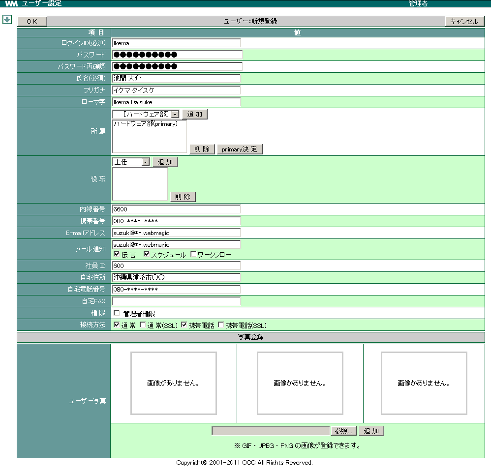
| 伝言 | 行先伝言板で自分宛に伝言が書き込まれた場合 |
| スケジュール | 他の人が自分のスケジュールを登録した場合 |
| ワークフロー | 自分が閲覧すべきワークフローがある場合 |
「接続方法」では、接続方法によりチェックを付加します。
| 通常 | http://***.*** と入力し接続する場合 |
| SSL | https://***.*** と入力し接続する場合 |
| 携帯 | http://***.***/m/ と携帯電話 (i-mode,EZweb) 端末から接続する場合 |
| 携帯SSL | https://***.***/m/ と携帯電話 (i-mode,EZweb) 端末から接続する場合 |
Note
携帯での接続は、オプションの i-mode 対応または EZweb 対応を購入している場合です。
「ユーザ写真」では、ユーザーの写真が 3枚 まで登録できます。 [2]
1.1.2. ユーザーを修正する¶
メニューの
をクリックします。- をクリックします。
修正したいユーザーの 修正 をクリックします。
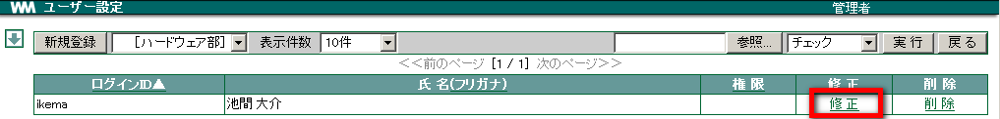
各項目を修正し、 OK をクリックします。
1.1.3. ユーザーを削除する¶
メニューの
をクリックします。- をクリックします。
削除したいユーザーの 削除 をクリックします。

確認メッセージが表示されたら、 OK をクリックします。
1.1.4. ユーザーをインポートする¶
ユーザーを CSV ファイルに書き出すことができます。
- メニューの をクリックします。
- をクリックします。
- 参照 をクリックし、取り込む CSV ファイルを選択します。

プルダウンメニューから インポート を選択し、 実行 をクリックします。

インポート完了のメッセージが表示されます。プルダウンメニューから 結果参照 を選択して 実行 をクリックします。

インポートされた結果が別ウィンドウで表示されます。

<説明>
| チェック | インポートするために、CSVファイルの内容をチェックします。 |
| 結果参照 | チェック・インポート・エクスポートの処理結果を表示します。 |
| インポート | CSVファイルからデータを取り込みます。 |
| エクスポート | 登録したデータをCSVファイルに書き出します。 |
1.1.5. ユーザーをエクスポートする¶
表計算ソフト等で編集した CSV ファイルを取り込むことができます。
メニューの
をクリックします。- をクリックします。
プルダウンメニューから エクスポート を選択して 実行 をクリックします。

ダイアログが表示されるので、 保存 をクリックし保存したい場所を選択します。
1.1.6. CSV ファイルの書き方¶
CSV ファイルを記載する場合は、一度エクスポートを実行した CSV ファイル(export.csv) をご参照ください。
| インポートに必要なヘッダーの説明 | ||
|---|---|---|
| operation | 操作 |
のいずれかを指定(半角英字) |
| username | ログイン ID | WebMagic にログインするときの ID 文字数は 15文字 まで。 利用可能文字は 半角英数字(a-z A-Z 0-9), アンダースコア(_), ハイフン(-) |
| password | パスワード | エクスポート時に作成される export.csv にはこの列は含まれない(セキュリティのため) 文字数は 無制限 。 利用可能文字は 半角英数字(a-z A-Z 0-9), アンダースコア(_), ハイフン(-) |
| name | 氏名 | |
| kana | フリガナ | 全角カタカナ |
| roma | ローマ字 | 半角英字 |
| emp_code | 社員 ID | |
| post | 役職名 | 役職設定で設定した役職名。 複数ある場合は 「:」 で分割 例) 役職が「部長」と「課長」の場合, 「部長:課長」と指定 |
| extension | 内線番号 | |
| portable_phone | 携帯番号 | |
| e_mail | E-mail アドレス | |
| contact_email | メール通知アドレス | 伝言などで通知するアドレス |
| contact_email_flg | メール通知フラグ | メール通知を行うか否かのチェック(半角数字)。 「1」 が ON, 「0」 が OFF 例) 伝言(ON), スケジュール(OFF), ワークフロー(OFF)を「1:0:0」のように指定 |
| group | 所属コード | 所属設定で設定したコード(半角数字) 複数ある場合は 「:」 で分割 例) 所属が総務部「100」と 管理部「200」の場合, 「100:200」と指定 |
| home_address | 自宅住所 | |
| home_tel | 自宅 TEL 番号 | |
| home_fax | 自宅 FAX 番号 | |
| conn_method | 接続方法フラグ | WebMagic へのポート単位の接続許可のチェック(半角数字)。 「1」 が ON, 「0」 が OFF 例) 通常(ON), 通常 SSL(OFF), 携帯(ON), 携帯 SSL(ON) を「1:0:1:1」のように指定 |
| perms | 管理者権限 | WebMagic の管理者を指定する(半角英字)。 管理権限を与える場合は「admin」と指定 |
1.2. 所属¶
WebMagic の「所属」は組織内での「部署」にあたります。所属は階層的に登録でき、その階層数に制限はありません。
1.2.1. 所属を設定する¶
メニューの
をクリックします。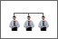 をクリックします。
プルダウンメニューより 所属の新規登録を行う を選択し、 実行 をクリックします。

各項目を入力し、 OK をクリックします。
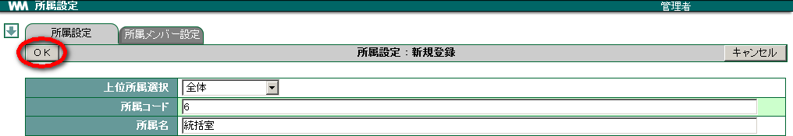
Note
所属コードには任意の数字を入力します。複数の所属を登録する場合、所属コードが重複しないようにします。また、複数の所属を登録した場合、所属は所属コードが若い順に表示されます。
1.2.2. 階層的に所属を設定する¶
メニューの
をクリックします。をクリックします。
プルダウンメニューより 所属の新規登録を行う を選択し、 実行 をクリックします。
「上位所属選択」から、階層的に登録したい所属コードを選択します。

その他の各項目を入力し、 OK をクリックします。
Note
所属コードには任意の数字を入力します。複数の所属を登録する場合、所属コードが重複しないようにします。また、複数の所属を登録した場合、所属は所属コードが若い順に表示されます。
1.2.3. 所属を修正する¶
メニューの
をクリックします。をクリックします。
修正したい所属の 所属名 をクリックします。

各項目を修正し、 OK をクリックします。
1.2.4. 所属を削除する¶
メニューの
をクリックします。をクリックします。
削除したい所属にチェックを付けます。

プルダウンメニューより チェックされた所属を削除する を選択し、 実行 をクリックします。

確認メッセージが表示されたら、 OK をクリックします。
Warning
Warning
1.2.5. ユーザーの所属を設定する¶
設定画面の ユーザー からではなく、 所属 からユーザーの所属を設定できます。
メニューの
をクリックします。をクリックします。
ユーザーを登録・削除したい 所属名 をクリックします。
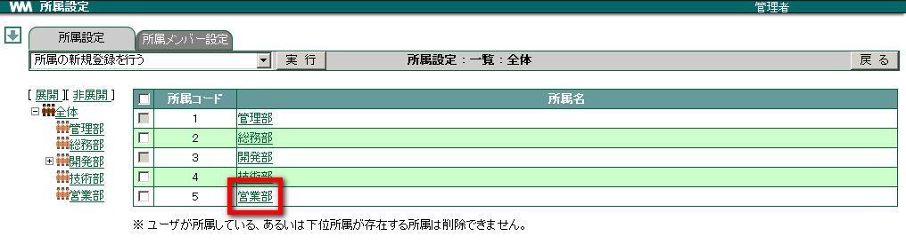
[ユーザー一覧] タブをクリックします。

登録したいユーザーを選択し、 追加→ をクリックします。
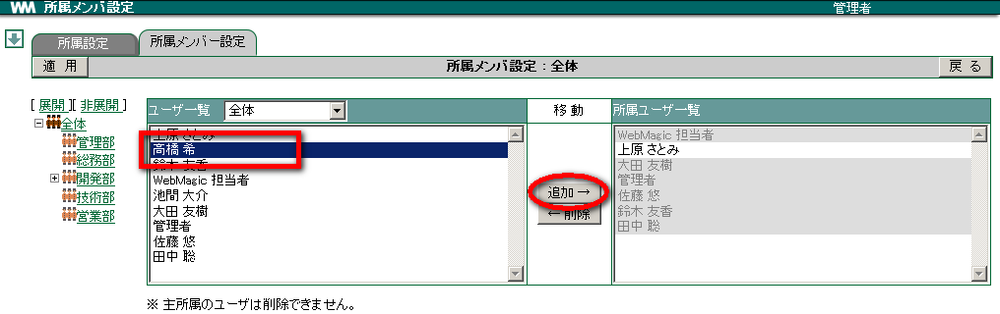
削除したい場合は「選択ユーザー一覧」からユーザーを選択し、 ←削除 をクリックします。
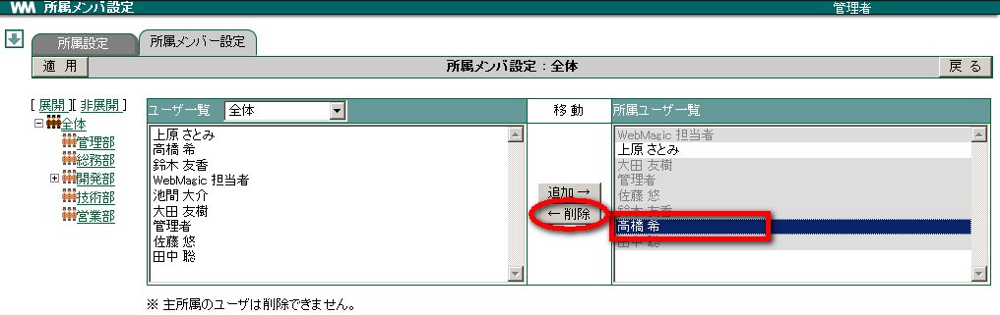
適用 をクリックします。
1.3. 役職¶
役職は名称を任意に設定することができます。役職の名称が変更された場合にも速やかに対応できます。
1.3.1. 役職を登録する¶
メニューの
をクリックします。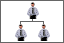 をクリックします。
プルダウンメニューから 役職の新規登録を行う を選択し、 実行 をクリックします。

役職名を入力し、 OK をクリックします。

1.3.2. 役職を修正する¶
メニューの
をクリックします。をクリックします。
役職名一覧から修正したい 役職名 をクリックします。

役職名を修正し、 OK をクリックします。
1.3.3. 役職を削除する¶
メニューの
をクリックします。をクリックします。
削除したい役職にチェックを付けます。

プルダウンメニューから チェックされた役職を削除する を選択し、 実行 をクリックします。
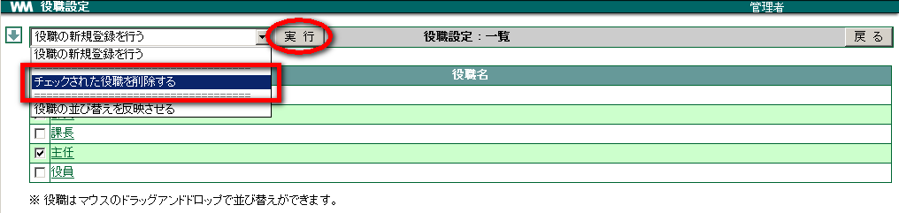
表示されたメッセージの OK をクリックします。
Warning
初期値として登録されている役職は削除できません。
1.3.4. 役職を並び替える¶
メニューの
をクリックします。をクリックします。
表示する順番を変更したい役職を選択し、ドラッグアンドドロップで移動します。

「実行ボタンで並び替えを反映させてください。」のメッセージが表示され、プルダウンメニューが 役職の並び替えを反映される に変更されますので、そのまま 実行 をクリックします。

1.4. 設備¶
設備では、設備の名前や、その設備を分類分けする設備区分を登録します。「営業部だけが予約できる設備」「田中さんと加藤さんだけが閲覧できる設備」など、設備ごとにアクセス権が設定できます。
1.4.1. 設備区分を設定する¶
メニューの
をクリックします。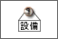 をクリックします。
新規登録 をクリックします。
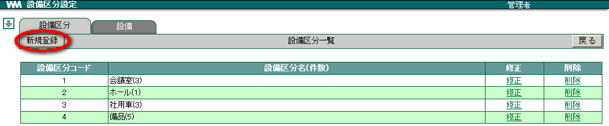
各項目を入力し、 OK をクリックします。

Note
設備区分コードには任意の数字を入力します。複数の設備区分を登録する場合、設備区分コードが重複しないようにします。また、複数の設備区分を登録した場合、設備区分は設備区分コードが若い順に表示されます。
1.4.2. 設備区分を修正する¶
メニューの
をクリックします。をクリックします。
修正したい設備区分の 修正 をクリックします。

各項目を修正し、 OK をクリックします。
1.4.3. 設備区分を削除する¶
メニューの
をクリックします。をクリックします。
削除したい施設区分の 削除 をクリックします。

確認メッセージが表示されたら、 OK をクリックします。
Warning
設備区分を削除すると、設備区分に設定されている設備とその設備に登録されている予約も削除されます。
1.4.4. 設備を設定する¶
登録された設備区分に対して、設備を設定します。設備ごとに、所属単位、またはユーザー単位で、アクセス権の設定ができます。 ここでは、所属単位でアクセス権を設定する方法を紹介します。
メニューの
をクリックします。をクリックします。
[設備] タブをクリックし、設備を設定する設定区分を選択します。

新規登録 をクリックします。

各項目を入力し、 アクセス権 をクリックします。

「所属一覧」からアクセス権を設定したい所属を選択し、 追加→ をクリックします。

「所属アクセス権一覧」から 所属 を選択し、設定したいアクセス権をリストから選択します。

変更 をクリックし、 OK をクリックします。

OK をクリックします。

Note
個人へのアクセス権設定も所属と同様の操作で 追加・削除 を行います。
Note
設備コードには任意の数字を入力します。複数の設備を登録する場合、設備コードが重複しないようにします。また、複数の設備を登録した場合、設備は設備コードが若い順に表示されます。
Note
画像添付には設備（教室や備品など）の画像を登録します。 参照 をクリックし画像ファイルを選択し、 追加 をクリックします。
<アクセス権の説明>
| 一覧参照 | 一つ一つの設備の予約は閲覧できませんが、一日単位や週間・月間単位の一覧は閲覧できます。（予約はできません） |
| 詳細参照 | 一つ一つの設備の予約内容まで閲覧できます。（予約はできません） |
| 作成 | 設備の予約ができます。 |
| 権限無し | 設備を閲覧・予約できなくなります。 |
1.4.5. 設備を修正する¶
メニューの
をクリックします。をクリックします。
[設備] タブをクリックし、プルダウンメニューから修正したい設備が登録されている 設備区分 を選択します。

修正したい設備の 修正 をクリックします。

各項目・アクセス権を修正し、 OK をクリックします。
1.4.6. 設備を削除する¶
メニューの
をクリックします。をクリックします。
[設備] タブをクリックし、プルダウンメニューから削除したい設備が登録されている 設備区分 を選択します。
削除したい設備の 削除 をクリックします。
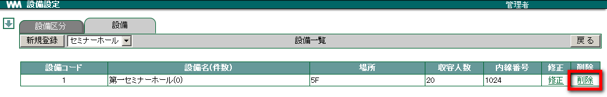
確認メッセージが表示されたら、 OK をクリックします。
Note
設備を削除すると、設備に登録されている予約も削除されます。
1.5. 掲示板¶
掲示板では、情報を分類分けする「カテゴリ」を設定します。カテゴリごとにアクセス権が設定できます。例えば「営業部のみが閲覧できるカテゴリ」や「田中さんと加藤さんだけが書き込むことができるカテゴリ」の設定ができます。
1.5.1. 掲示板のカテゴリを設定する¶
掲示板のカテゴリを設定します。また、設定したカテゴリに対し所属単位、ユーザー単位ごとにアクセス権の設定もできます。
メニューの
をクリックします。 をクリックします。
をクリックします。新規登録 をクリックします。
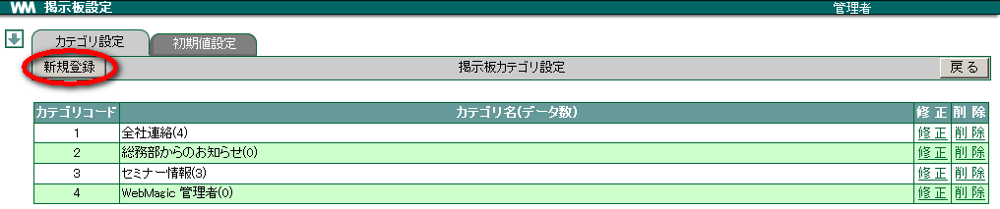
掲示板カテゴリ設定の各項目を入力し、 アクセス権 をクリックします。 [3]
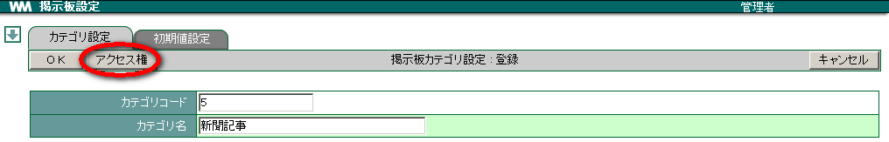
「所属一覧」からアクセス権を設定したい所属を選択し、 追加→ をクリックします。

「所属アクセス権一覧」から所属を選択し、設定したいアクセス権をリストから選択します。

変更 をクリックし、 OK をクリックします。

OK をクリックします。
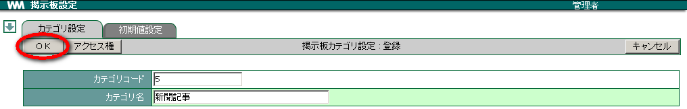
Note
個人へのアクセス権設定も所属と同様の操作で 追加・削除 を行います。
Note
カテゴリコードには任意の数字を入力します。複数のカテゴリを登録する場合、カテゴリコードが重複しないようにします。また、複数のカテゴリを登録した場合、カテゴリはカテゴリコードが若い順に表示されます。
<アクセス権の説明>
| 参照 | カテゴリに書き込まれている情報を閲覧できます。（登録はできません） |
| 作成 | カテゴリに情報を書き込むことができます。 |
| 権限無し | カテゴリにアクセスできません。 |
1.5.2. 掲示板のカテゴリを修正する¶
メニューの
をクリックします。- をクリックします。
修正したいカテゴリの 修正 をクリックします。
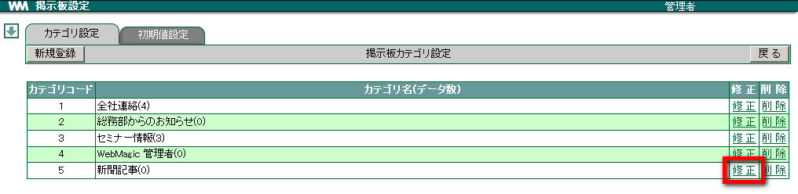
各項目・アクセス権を修正し、 OK をクリックします。
1.5.3. 掲示板のカテゴリを削除する¶
メニューの
をクリックします。- をクリックします。
削除したいカテゴリの 削除 をクリックします。
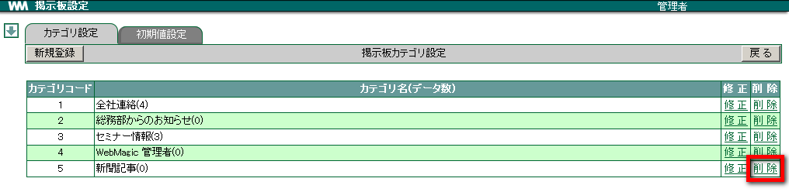
確認メッセージが表示されたら、 OK をクリックします。
Warning
カテゴリを削除すると、書き込まれている情報も削除されます。
1.5.4. 掲示板の初期値を設定する¶
ここでは、登録された掲示物1件ごとに対して「未読者・既読者一覧表示」を誰に許可するのかが設定できます。設定は次の通りです。
メニューの
をクリックします。- をクリックします。
[初期設定] タブをクリックします。

[未読者・既読者一覧表示] を誰に許可するか設定し、 適用 をクリックします。
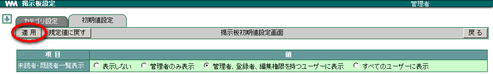
Note
値を規定値に戻したい場合は、 規定値に戻す をクリックします。
1.6. 電子会議室¶
会議室では、情報を分類分けする「カテゴリ」を設定します。カテゴリごとにアクセス権を設定できます。例えば「営業部のみが閲覧できるカテゴリ」や「田中さんと加藤さんだけが書き込むことができるカテゴリ」の作成などが行えます。
1.6.1. 電子会議室のカテゴリを設定する¶
電子会議室のカテゴリを設定します。また、設定したカテゴリに対して所属単位・ユーザー単位でアクセス権の設定もできます。
メニューの
をクリックします。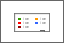 をクリックします。
新規登録 をクリックします。
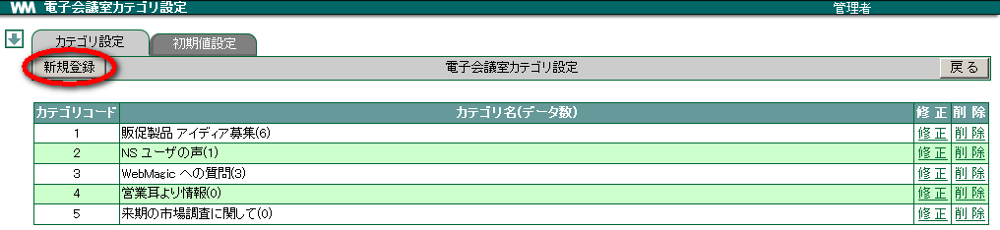
電子会議室カテゴリ設定の各項目を入力し、 アクセス権 をクリックします。 [3]

Note
カテゴリコードには任意の数字を入力します。複数のカテゴリを登録する場合、カテゴリコードが重複しないようにします。また、複数のカテゴリを登録した場合、カテゴリはカテゴリコードが若い順に表示されます。
「所属一覧」からアクセス権を設定したい所属を選択し、 追加→ をクリックします。
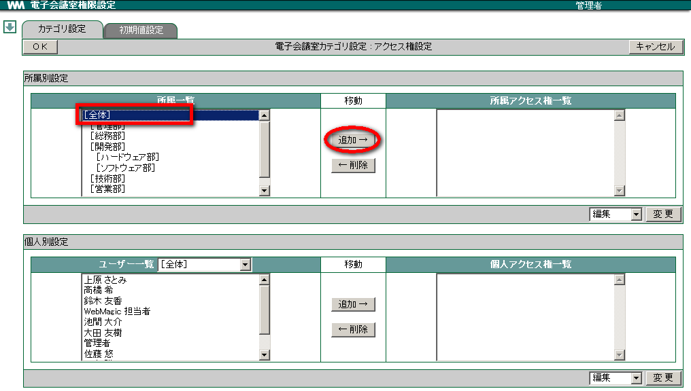
「所属アクセス権一覧」から所属を選択し、設定したいアクセス権をリストから選択して、 変更 をクリックしたあと、 OK をクリックします。
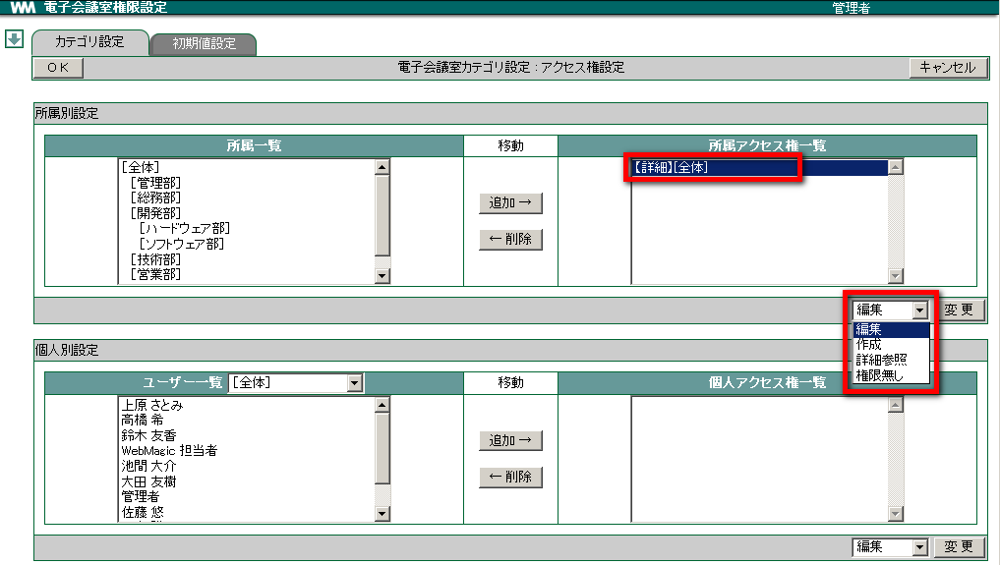
変更 をクリックし、 OK をクリックします。

OK をクリックします。

Note
個人へのアクセス権設定も所属と同様の操作で 追加・削除 を行います。
<アクセス権の説明>
| 参照 | カテゴリに書き込まれている情報を閲覧できます。（登録はできません） |
| 作成 | カテゴリに情報を書き込むことができます。 |
| 権限無し | カテゴリにアクセスできません。 |
1.6.2. 電子会議室のカテゴリを修正する¶
メニューの
をクリックします。- をクリックします。
修正したいカテゴリの 修正 をクリックします。

各項目・アクセス権を修正し、 OK をクリックします。
1.6.3. 電子会議室のカテゴリを削除する¶
メニューの
をクリックします。- をクリックします。
削除したいカテゴリの 削除 をクリックします。

確認メッセージが表示されたら、 OK をクリックします。
Warning
カテゴリを削除すると、書き込まれている情報も削除されます。
1.6.4. 電子会議室の初期値を設定する¶
カテゴリの登録をユーザー側で「登録可能（表示）・登録不可（非表示）」及び「未読・既読一覧表示」の設定ができます。
メニューの
をクリックします。- をクリックします。
[初期値設定] タブをクリックします。

「電子会議室のカテゴリ登録ボタン」 の 表示・非表示 、 「未読者・既読者一覧表示」 の表示を設定します。

適用 をクリックします。
Note
値を規定値に戻したい場合は、 規定値に戻す をクリックします。
1.7. 文書管理¶
文書管理では、情報を分類分けする「カテゴリ」を設定します。カテゴリは所属ごとに設定できます。カテゴリごとにアクセス権の設定を行えますので、「営業部のみが閲覧できるカテゴリ」や「田中さんと加藤さんだけが書き込むことができるカテゴリ」の作成が行えます。
1.7.1. 文書管理のカテゴリを設定する¶
文書管理のカテゴリを設定します。また、設定したカテゴリに対して所属単位・ユーザー単位ごとにアクセス権を設定できます。
メニューの
をクリックします。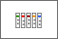 をクリックします。
新規登録 をクリックします。

「所属名」を選択し、各項目を入力して アクセス権 をクリックします。

「所属一覧」からアクセス権を設定したい所属を選択し、 追加→ をクリックします。
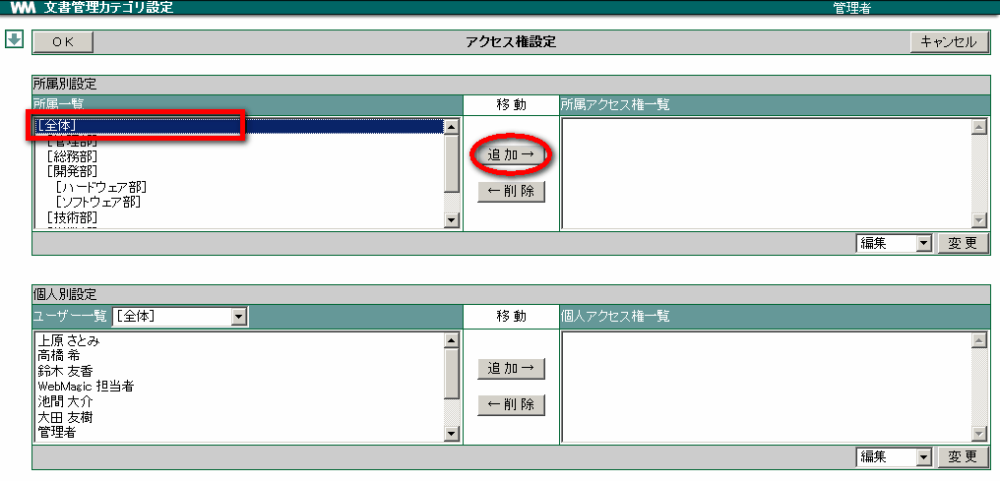
「所属アクセス権一覧」から所属を選択し、設定したいアクセス権をリストから選択して、 変更 をクリックしたあと、 OK をクリックします。

変更 をクリックし、 OK をクリックします。

OK をクリックします。

Note
個人へのアクセス権設定も所属と同様の操作で 追加・削除 を行います。
Note
カテゴリコードには任意の数字を入力します。複数のカテゴリを登録する場合、カテゴリコードが重複しないようにします。また、複数のカテゴリを登録した場合、カテゴリはカテゴリコードが若い順に表示されます。
<アクセス権の説明>
| 参照 | カテゴリに書き込まれている情報を閲覧できます。（情報を追加・変更はできません） |
| 作成 | カテゴリに情報を書き込むことができます。 |
| 権限無し | カテゴリにアクセスできません。 |


1.8. 行事予定¶
行事予定では、アクセス権などの設定を行えます。アクセス権は、所属・個人ごとに割り当てることができます。また、行事区分の作成・修正・削除・並び替えを行うことができます。
1.8.1. 行事予定のアクセス権を設定する¶
メニューの
をクリックします。 をクリックします。
をクリックします。左側のツリーからアクセス権を割り当てたい所属をクリックします。

「所属一覧」 からアクセス権を割り当てたい所属を選び、 追加→ をクリックします。

「所属アクセス一覧」 へ追加した所属を選択、プルダウンメニューから権限を選択します。

修正 をクリックし、 適用 をクリックします。

Note
個人へのアクセス権設定も所属と同様の操作で 追加・削除 を行います。
<アクセス権の説明>
| 編集 | 行事を作成することができ、自分または他人が作成した行事の編集・削除が行えます。 |
| 作成 | 行事を作成することができ、自分が作成した行事の編集・削除が行えます。 |
| 詳細参照 | 行事を閲覧することができます。 |
| 一覧参照 | 行事一覧を閲覧することができます。 |
| 権限なし | 行事一覧を閲覧できません。 |
1.8.2. 行事区分を登録する¶
メニューの
をクリックします。- をクリックします。
[行事区分] タブをクリックします。
プルダウンメニューから 区分の新規登録を行う を選択し、 実行 をクリックします。

区分名を入力し OK をクリックします。

1.8.3. 行事区分を修正する¶
メニューの
をクリックします。- をクリックします。
[行事区分] タブをクリックします。
修正したい行事区分名をクリックします。

区分名を修正し、 OK をクリックします。
1.8.4. 行事区分を削除する¶
メニューの
をクリックします。- をクリックします。
[行事区分] のタブをクリックします。
削除したい行事区分にチェックを付けます。
プルダウンメニューから チェックされた区分を削除する を選択し、 実行 をクリックします。 [5]
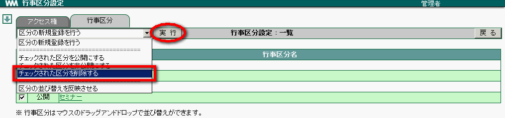
表示されたメッセージの OK をクリックします。
1.8.5. 行事区分を公開にする¶
メニューの
をクリックします。- をクリックします。
[行事区分] のタブをクリックします。
公開したい行事区分にチェックを付けます。
プルダウンメニューから チェックされた区分を公開にする を選択し、 実行 をクリックします。

1.8.6. 行事区分を非公開にする¶
メニューの
をクリックします。- をクリックします。
[行事区分] のタブをクリックします。
非公開したい行事区分にチェックを付けます。
プルダウンメニューから チェックされた区分を非公開にする を選択し、 実行 をクリックします。

1.8.7. 行事区分を並び替える¶
メニューの
をクリックします。- をクリックします。
[行事区分] のタブをクリックします。
表示する順番を変更したいメニューを選択し、ドラッグアンドドロップで移動します。

「実行ボタンで並び替えを反映させてください。」のメッセージが表示され、プルダウンメニューが 区分の並び替えを反映される に変更されますので、そのまま 実行 をクリックします。

1.9. ワークフロー¶
ワークフローは、電子決裁をする場合の承認経路をあらかじめ登録しておくことができます。経路は複数登録でき、決裁の内容により使い分けることができます。また、決裁に使用する文書の雛形も登録できます。決裁時に次の決裁者にメールを「送信する・しない」などの設定もできます。
1.9.1. 申請経路を設定する¶
メニューの
をクリックします。 をクリックします。
をクリックします。新規登録 をクリックします。

「申請経路名」を任意に入力し、「ユーザー一覧」から承認者を選択して 追加→ をクリックします。

「優先順序」を設定（変更）し、 OK をクリックします。

1.9.2. 申請経路を修正する¶
メニューの
をクリックします。- をクリックします。
修正したい経路名の 修正 をクリックします。

各項目を修正し、 OK をクリックします。
1.9.3. 申請経路を削除する¶
メニューの
をクリックします。- をクリックします。
削除したい経路名の 削除 をクリックします。
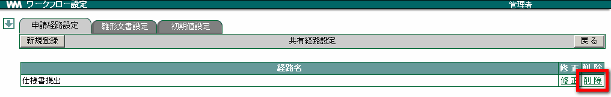
確認メッセージが表示されたら OK をクリックします。
1.9.4. 申請する際の文書の雛形を設定する¶
メニューの
をクリックします。- をクリックします。
[雛形文書設定] タブをクリックし、 新規登録 をクリックします。
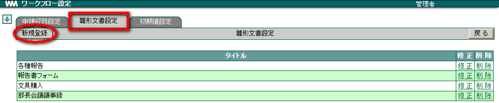
「タイトル」を任意に入力し、「雛形」に本文となる文章を入力して OK をクリックします。

1.9.5. 申請する際の文書の雛形を修正する¶
メニューの
をクリックします。- をクリックします。
[雛形文書設定] タブをクリックし、修正したい雛形の 修正 をクリックします。

各項目を修正し、 OK をクリックします。
1.9.6. 申請する際の文書の雛形を削除する¶
メニューの
をクリックします。- をクリックします。
[雛形文書設定] タブをクリックし、削除したい雛形文書の 削除 をクリックします。
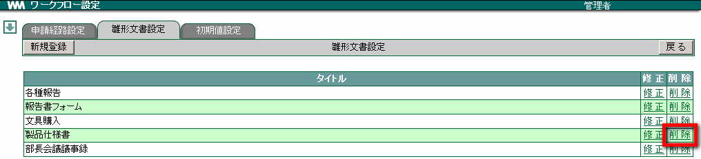
確認メッセージが表示されたら、 OK をクリックします。
1.9.7. 申請する際の初期値を設定する¶
メニューの
をクリックします。- をクリックします。
「初期値設定」シートを選択し、「次の人へのメールを送信」「未読・既読表示」を設定します。

適用 をクリックします。
Note
値を規定値に戻したい場合は、 規定値に戻す をクリックします。
1.10. URL リンク¶
URLリンクでは、閲覧できるホームページを登録します。登録する前に、あらかじめカテゴリを登録しておきます。
1.10.1. URL カテゴリを設定する¶
メニューの
をクリックします。 をクリックします。
をクリックします。「カテゴリ名」「説明」を任意に入力し、 追加 をクリックします。

↑読込↑ の下にカテゴリ名が表示されたことを確認ます。

1.10.2. 登録した URL カテゴリを変更する¶
メニューの
をクリックします。- をクリックします。
変更したいカテゴリ名を選択し、 ↑読込↑ をクリックします。
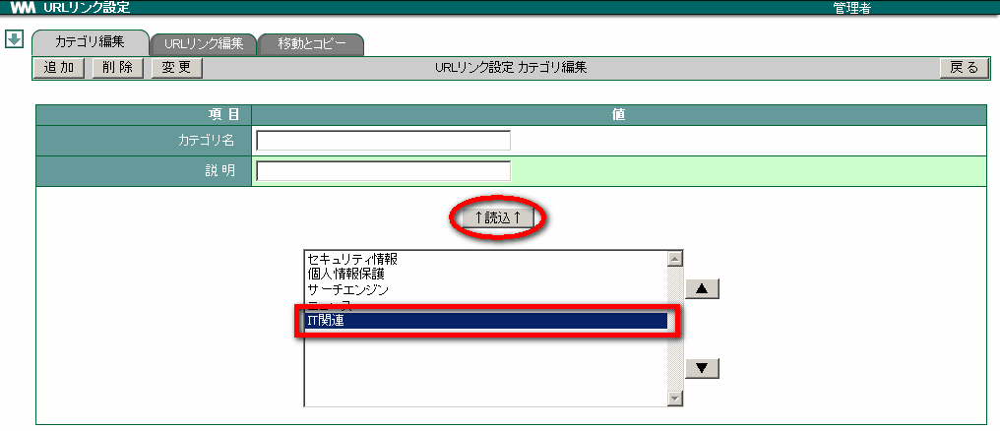
「カテゴリ名」や「説明」を変更し、 変更 をクリックします。

1.10.3. 登録した URL カテゴリを削除する¶
メニューの
をクリックします。- をクリックします。
削除したいカテゴリ名を選択し、 削除 をクリックします。

確認メッセージが表示されたら、 OK をクリックします。
Warning
カテゴリをクリックするとカテゴリに登録されているURLリンクも削除されます。
1.10.4. URL リンクを設定する¶
メニューの
をクリックします。- をクリックします。
[URLリンク編集] のタブをクリックします。
あらかじめ設定しておいた「カテゴリ」を選択し、「リンク名」「URL」「説明」等を任意に入力して 追加 をクリックします。

▲ ▼ 空白内に、URL リンクが1件追加されたことを確認します。

1.10.5. 登録した URL リンクを変更する¶
メニューの
をクリックします。- をクリックします。
[URLリンク編集] のタブをクリックします。
変更したい URL リンクがあるカテゴリを選択し、変更したい URL リンクを ▲ ▼ の枠内より選択して、 ↑読込↑ をクリックします。
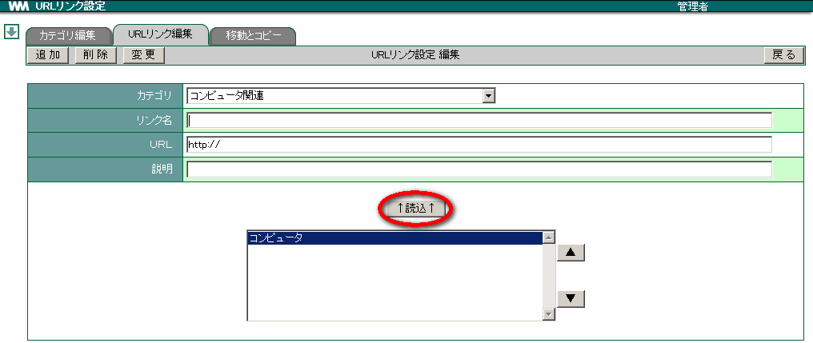
「リンク名」や「URL」「説明」を変更し、 変更 をクリックします。
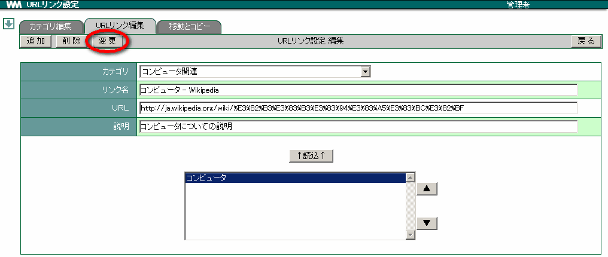
1.10.6. 登録した URL リンクを削除する¶
メニューの
をクリックします。- をクリックします。
[URLリンク編集] のタブをクリックします。
削除したい URL リンクがあるカテゴリを選択し、削除したい URL リンクを選択して、 削除 をクリックします。

確認メッセージが表示されたら、 OK をクリックします。
1.10.7. 登録した URL リンクを別カテゴリへ「移動・コピー」する¶
メニューの
をクリックします。- をクリックします。
[移動とコピー] のタブをクリックします。
移動・コピーしたい URL リンクがあるカテゴリを選択し、対象となるリンク名を選択します。また、選択したリンク名の移動・コピー先となるカテゴリを選択します。
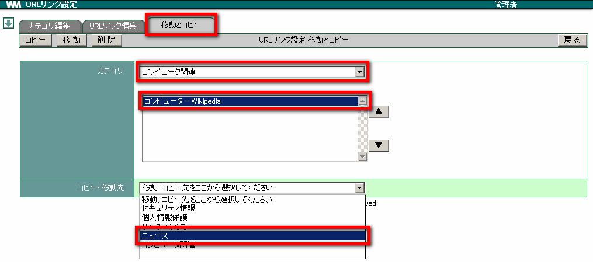
コピー または 移動 をクリックします。

確認メッセージが表示されたら、 OK をクリックします。
1.10.8. 「移動・コピー」から URL リンクを削除する¶
メニューの
をクリックします。- をクリックします。
[移動とコピー] のタブをクリックします。
削除したい URL があるカテゴリを選択し、対象となるリンク名を選択します。 削除 をクリックします。
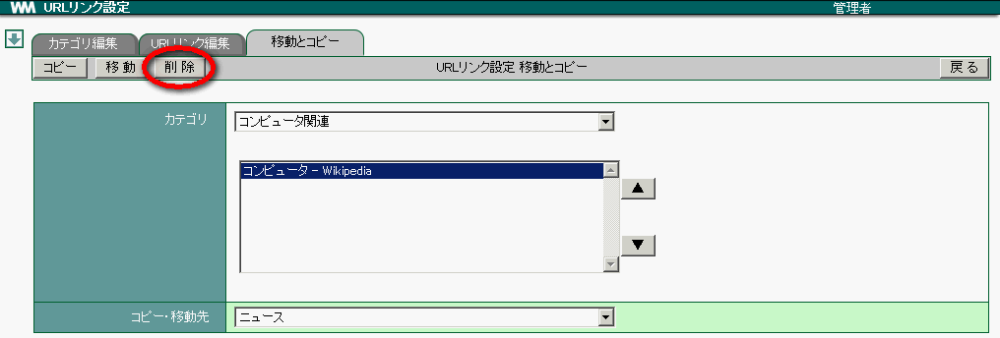
確認メッセージが表示されたら、 OK をクリックします。
1.11. 用件¶
用件では、伝言の「用件の雛形」を登録できます。あらかじめ用意されている4パターンの雛形以外に、自由に文章を登録できます。
1.11.1. 行先伝言板の用件を設定する¶
メニューの
をクリックします。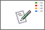 をクリックします。
新規登録 をクリックします。
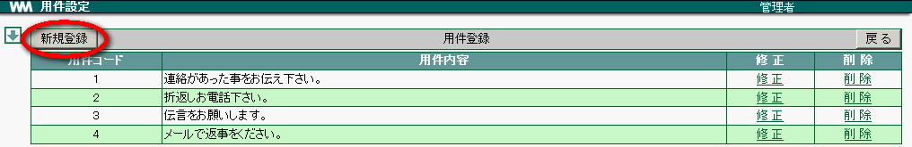
各項目を入力し、 OK をクリックします。

Note
用件コードには任意の数字を入力します。複数の用件を登録する場合、用件コードが重複しないようにします。また、複数の用件を登録した場合、用件は用件コードが若い順に表示されます。
1.11.2. 行先伝言板の用件を修正する¶
メニューの
をクリックします。をクリックします。
修正したい用件内容の 修正 をクリックします。

各項目を修正し、 OK をクリックします。
1.11.3. 行先伝言板の用件を削除する¶
メニューの
をクリックします。をクリックします。
削除したい用件内容の 削除 をクリックします。
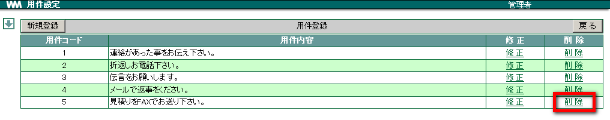
確認メッセージが表示されたら、 OK をクリックします。
1.12. 行先伝言板¶
行先伝言板では、「戻り時刻」を自動消去する機能の初期値を設定します。
1.12.1. 行先伝言板の自動消去機能を設定する¶
メニューの
をクリックします。 をクリックします。
をクリックします。各項目を設定し、 適用 をクリックします。

Note
値を規定値に戻したい場合は、 規定値に戻す をクリックします。
1.13. 休日¶
休日では、WebMagic 上のカレンダーに休日を設定する機能です。祝祭日等あらかじめ設定されているもの以外に「創立記念日」などが任意に設定できます。
1.13.1. 休日を設定する¶
メニューの
をクリックします。 をクリックします。
をクリックします。新規登録 をクリックします。

各項目を設定し、 OK をクリックします。

<種別>
| 指定休日 | 公休日以外 |
| 公休日 | 国家が定めた休日 |
1.13.2. 休日を修正する¶
メニューの
をクリックします。- をクリックします。
修正したい休日名をクリックします。

編集 をクリックします。

各項目を修正し、 OK をクリックします。
1.13.3. 休日を削除する¶
メニューの
をクリックします。- をクリックします。
削除したい休日の休日名をクリックします。
削除 をクリックします。
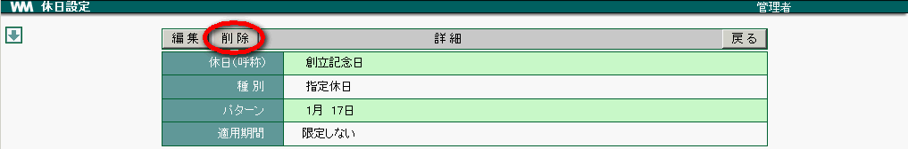
確認メッセージが表示されたら、 OK をクリックします。
1.13.4. 表示を期間で切り替える¶
メニューの
をクリックします。- をクリックします。
「期間」の 年間・月間 を選択すると、期間で表示を切り替えることができます。

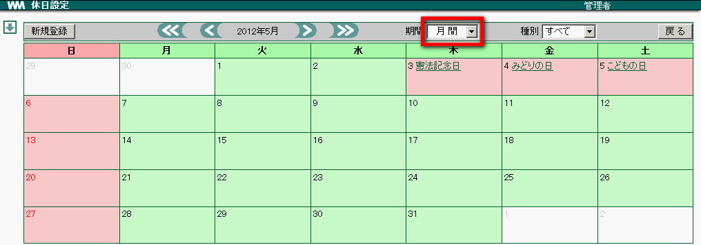
1.13.5. 表示を種別で切り替える¶
メニューの
をクリックします。- をクリックします。
「種別」の 公休日・指定休日 を選択すると、種別で表示を切り替えることができます。

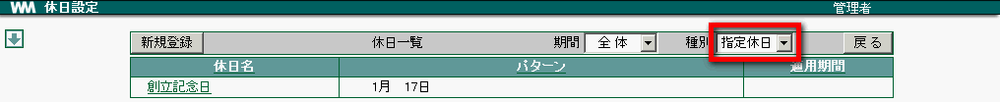
1.14. 添付アイコン¶
添付ファイルを設定した際に、添付ファイルを示すアイコンの図柄の設定を行います。あらかじめ用意されている図柄以外に、オリジナルの図柄も設定できます。
1.14.1. 添付ファイルのアイコンを設定する¶
Note
オリジナルの図柄のサイズは、32×32ピクセルにしてください。
メニューの
をクリックします。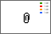 をクリックします。
新規登録 をクリックします。

「ファイル拡張子」にファイルの拡張子を入力し、「アイコンファイル名」にオリジナルのアイコンファイルを設定し、 OK をクリックします

確認メッセージが表示されたら、 OK をクリックします。
1.14.2. 添付ファイルのアイコンの設定を修正する¶
メニューの
をクリックします。をクリックします。
修正したいアイコンの 修正 をクリックします。

各項目を修正し、 OK をクリックします。
1.14.3. 添付ファイルのアイコンの設定を削除する¶
メニューの
をクリックします。をクリックします。
修正したいアイコンの 修正 をクリックします。
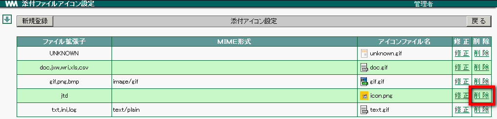
確認メッセージが表示されたら、 OK をクリックします。
1.15. グラフ表示色¶
グラフ表示色では、スケジュールなどのグラフ表示で選択できるグラフの色を設定しておくためのものです。初期値では6色設定されていますが、追加したり削除したりできます。
1.15.1. グラフ表示色を設定する¶
メニューの
をクリックします。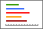 をクリックします。
あらかじめ用意されている色候補群から、任意の色をクリックします。

「ID（0以外）」に任意の数字を入力し、 登録 をクリックします。 [6]

Note
あらかじめ用意されている色候補群の色以外でも、「COLOR」に直接16進数値を入力すれば色の設定が行えます。
- 確認メッセージが表示されたら、 OK をクリックします。
1.15.2. 設定したグラフ表示色を削除する¶
メニューの
をクリックします。をクリックします。
削除したい色の 削除 をクリックします。

確認メッセージが表示されたら、 OK をクリックします。
Warning
初期値で作成されている色を削除することもできます。
1.16. メール¶
メールでは、個人のアカウントを設定する際の初期値を設定することができます。ここでの設定は、メニューの［メール］画面で［詳細設定］をクリックし、表示される「アカウント」に反映されます。
1.16.1. メール環境の初期値を設定する¶
メニューの
をクリックします。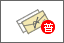 をクリックします。
各項目を設定し、 OK をクリックします。

確認メッセージが表示されたら、 OK をクリックします。
1.17. メニュー¶
Note
POSTやGETを利用した方式でシングルサインオンの受け口が用意されているWebシステムに限ります。
Warning
初期値として登録されているシステムメニューは削除することが出来ません。
1.17.1. メニューを公開にする¶
メニューの
をクリックします。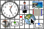 をクリックします。
公開したいメニューにチェックを付けます。
プルダウンメニューから チェックされたメニューを公開にする を選択し、 実行 をクリックします。
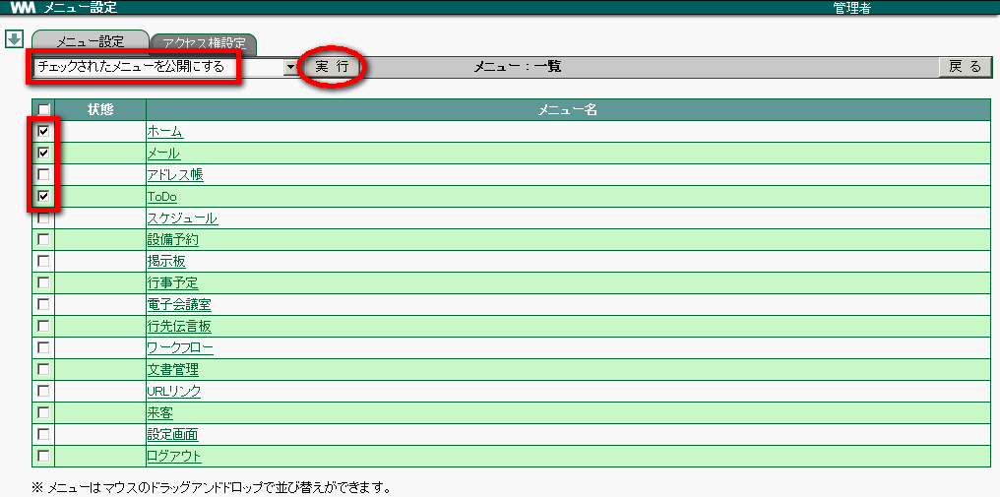
1.17.2. メニューを非公開にする¶
メニューの
をクリックします。をクリックします。
非公開したいメニューにチェックを付けます。
プルダウンメニューから チェックされたメニューを非公開にする を選択し、 実行 をクリックします。

1.17.3. メニューを並び替える¶
メニューの
をクリックします。をクリックします。
表示する順番を変更したいメニューを選択し、ドラッグアンドドロップで移動します。
「実行ボタンで並び替えを反映させてください。」のメッセージが表示され、プルダウンメニューが メニューの並び替えを反映される に変更されますので、そのまま 実行 をクリックします。

1.17.4. メニューを新規登録する¶
メニューの
をクリックします。をクリックします。
プルダウンメニューから メニューの新規登録を行う を選択し、 実行 をクリックします。

「基本設定」 の各項目を入力し、 OK をクリックします。

シングルサインオンの設定も行う場合は [シングルサインオン設定] の各項目を入力します。 [7]
OK をクリックします。
Warning
メニュー名は必須入力項目です。
Note
ログインID、パスワード以外の値が必要な場合はオプション値に入力してください。
1.17.5. メニューを修正する¶
メニューの
をクリックします。をクリックします。
修正したいメニューのメニュー名をクリックします。

項目を修正し、 OK をクリックします。
1.17.6. メニューを削除する¶
メニューの
をクリックします。をクリックします。
削除したいメニューにチェックを付けます。
チェックされたメニューを削除する を選択し、 実行 をクリックします。
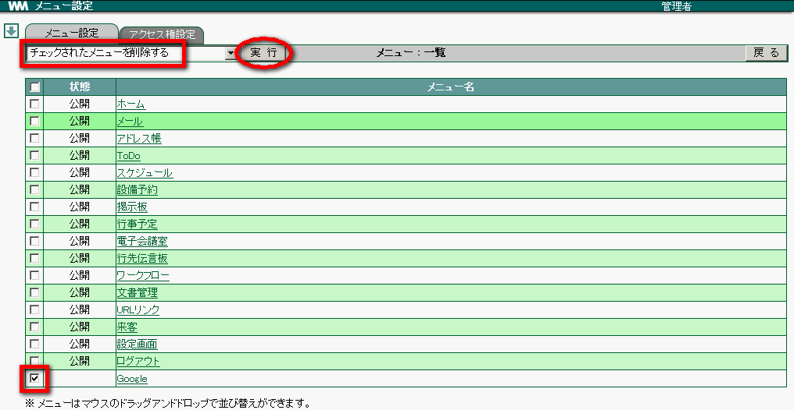
Warning
初期値として登録されているシステムメニューは削除することが出来ません。
1.17.7. メニューアクセス権の設定をする¶
メニューの
をクリックします。をクリックします。
[アクセス権設定] タブをクリックします。
左側のツリーからアクセス権を割り当てたいメニューをクリックします。

「所属一覧」 からアクセス権を割り当てたい所属を選び、 追加→ をクリックします。

「所属アクセス一覧」 へ追加した所属を選択、プルダウンメニューから権限を選択します。

修正 をクリックし、 適用 をクリックします。

Note
個人へのアクセス権設定も所属と同様の操作で 追加・削除 を行います。
1.18. アクセスログ¶
アクセスログでは、多種のログ情報を管理できます。所属別・機能別等のアクセス状態の一覧表示や、集計結果をグラフ表示することもできます。WebMagic がどのように利用されているのか、状況を把握し、管理することができます。

1.18.2. ログを絞り込む¶
メニューの
をクリックします。をクリックします。
詳細 をクリックします。
各プルダウンメニューから絞り込みたい条件を選択します。

1.18.3. 集計結果を確認する¶
メニューの
をクリックします。をクリックします。
[集計] タブをクリックすると、集計結果がグラフ表示されます。


1.19. 容量制限¶
1.19.1. 所属毎の容量を決める¶
所属毎に使用できる容量を決めましょう。
メニューの
をクリックします。 をクリックします。
をクリックします。左側のツリーから所属を選択します。

容量を設定したい 所属名 をクリックします。

容量各項目を設定し、 登録 をクリックします。

登録された値が一覧に表示されます。

Note
全体 に容量を設定すると、制限値が設定されていない所属にも適用されます。制限値が設定されている場合は チェックボックス が表示されます。
1.19.2. ラインを超えているユーザーを確認する¶
警告値または制限値を超えているユーザーを制限設定画面から確認します。
メニューの
をクリックします。- をクリックします。
警告・制限値 を超えているユーザーがいる所属は以下のように表示されます。

リンクをクリックすると、 [ユーザー一覧] タブへ移動し超えているユーザーが表示されます。
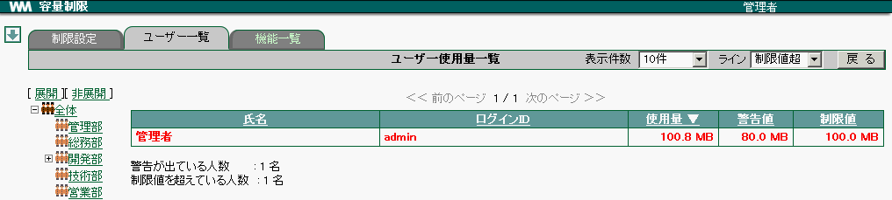
1.19.3. 所属毎の設定を削除する¶
メニューの
をクリックします。- をクリックします。
削除したい所属の設定にチェックを付けます。

プルダウンメニューから チェックされた設定を削除する を選択し、 実行 をクリックします。

Note
設定が削除された所属の制限値はデフォルトの 無制限 になります。
1.19.4. ユーザー毎の使用容量を一覧する¶
メニューの
をクリックします。- をクリックします。
[ユーザー一覧] タブをクリックします。
ユーザーの使用容量が一覧されます。

警告値を超えたユーザーは 青色 で表示されます。

制限値を超えたユーザーは 赤色 で表示されます。

1.19.5. 表示をライン毎に切り替える¶
メニューの
をクリックします。- をクリックします。
[ユーザー一覧] タブをクリックします。
表示したいラインを選択します。

1.19.6. 機能毎の使用容量を一覧する¶
各機能毎の容量一覧が表示されます。
メニューの
をクリックします。- をクリックします。
[機能一覧] タブをクリックします。
機能毎の使用容量が一覧されます。

Warning
共有領域 には設定画面にある機能の容量と WebMagic で必要なシステム領域が含まれています。
1.19.7. 容量の最適化をする¶
メニューの
をクリックします。- をクリックします。
[機能一覧] タブをクリックします。
最適化 をクリックします。
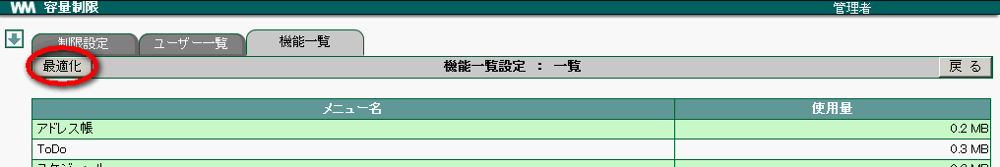
「最適化を行います」のメッセージが表示されますので、 OK をクリックします。
Warning
共有領域 は設定画面と WebMagic で必要なシステム領域の容量を合計してます。システム領域の容量を最適化することはできません。
Note
最適化中は 最適化 のボタンがクリックできなくなります。
1.20. 来客¶
来客では、来客予定を把握すべき管理者（受付係）の設定を行います。来客予定の登録情報を「非公開」とした場合でも、応対者以外に WebMagic 管理者と受付係に設定されたユーザーは閲覧することができます。
1.20.1. ユーザー（受付係）を設定する¶
メニューの
をクリックします。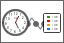 をクリックします。
ユーザー一覧よりユーザーを選択し、管理者(受付係)に登録するユーザーを選択して、 追加>> をクリックします。

1.21. メール通知設定¶
1.21.1. アラーム通知機能を「有効」にする¶
メニューの
をクリックします。 をクリックします。
をクリックします。アラーム通知機能を 有効にする を選択します。


1.22. 契約関連¶
契約関連では、WebMagic ASP サービスのご契約状況が確認できます。試用期間から本契約への手続き、またID数の増減などの申請が行えます。また、ご契約管理者様の登録情報の変更もここから行えます。
1.22.1. 登録情報を変更する¶
メニューの
をクリックします。 をクリックします。
をクリックします。[登録情報] タブをクリックし、登録情報の変更を行い 適用 をクリックします。
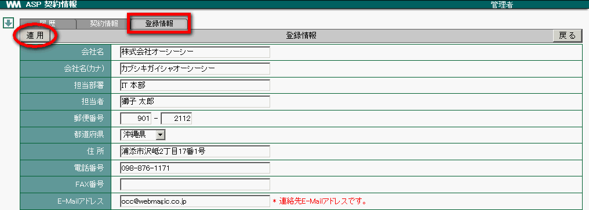
確認メッセージが表示されたら OK をクリックします。
1.22.2. 契約内容を変更する¶
ASP サービスの契約内容の変更が行えます。変更に関する申し込み手続き内容は下記の3項目です。
| [ 本契約事前申しこみ ] |
|
| [ 今すぐ本契約 ] | 試用期限を待たずに、お申込された月から本契約となります。 |
| [ 解 約 依 頼 ] | 解約依頼された月の末日をもって、翌月１日よりサービスはご利用できません。 但し、試用期間中の場合は試用期限日までご利用可能で試用期間の翌月1日よりサービスはご利用できません。 |
ここでは、「本契約事前申し込み」の手続きを例に手順をご説明いたします。
メニューの
をクリックします。- をクリックします。
[契約情報] タブをクリックします。
契約情報変更 をクリックします。
試用期間中の契約内容は、次の通りです。
ご利用可能 ID 数: 10 ID (300MB) ご 利 用 期 間: 約3ヶ月間
「本契約事前申し込み」 をチェックし、 OK をクリックします。

本契約手続きの流れが表示されます。内容を確認し、 戻る をクリックします。また、同じ内容が管理者様あてに E-Mail で自動送信されるようになっています。

契約情報変更 をクリックします。

管理者様あてに送信された E-Mail に記載された仮 ID をご確認ください。仮 ID を入力し GO をクリックします。

「WebMagic ASP利用規約」 が表示されます。[同意します] を選択します。
「本契約事前申し込み」 の確認が表示されます。[同意します] を選択します。
本契約事前申し込み確認のメッセージが表示されますので OK をクリックします。
OCC 宛に契約変更依頼のメールが送信されました。弊社からの契約変更完了メールが届きましたら契約変更手続き完了です。 戻る をクリックします。

Note
上記、返答期間を過ぎても弊社より連絡がない場合は、お手数ですが [お問合せ] 画面よりご連絡ください。
1.22.3. ID数変更申しこみ¶
- 契約関連より ID 数の変更依頼が行えます。
- ID数の変更は、本契約の場合のみ有効です。
- 試用期間中の場合は、「本契約」 された月よりID数変更の申しこみを行うことができます。
メニューの
をクリックします。- をクリックします。
[契約情報] タブをクリックします。
契約情報変更 をクリックし、「ID数変更お申し込み」を選択して OK をクリックします。

流れを確認し、 戻る をクリックします。また、同じ内容が管理者様あてに E-Mail にて自動送信されます。
契約情報変更 をクリックします。
管理者様あてに送信された E-Mail に記載された仮 ID をご確認ください。仮 ID を入力し GO をクリックします。
「ID数変更申しこみ」 より変更 ID 数を選択し、 変更します をクリックします。

メッセージが表示されたら OK をクリックします。
OCC宛に契約変更依頼のメールが送信されました。 戻る をクリックします。
弊社からの契約変更完了メールが届きましたら契約手続き完了です。
1.22.4. 契約履歴を確認する¶
現在のご契約状況や過去の契約内容が確認できます。
メニューの
をクリックします。- をクリックします。
[履歴] タブをクリックすると、契約履歴が一覧表示されます。

1.23. お問合せ¶
WebMagic に関するお問合せを行います。
1.23.1. 質問する¶
WebMagic の操作についてのご質問が行えます。質問は、この画面からのみの受付となります。
メニューの
をクリックします。をクリックします。
ご質問内容を選択し、 OK をクリックします。

[お問合せ内容] の OS, バージョン, ブラウザ をご確認ください。お問合せ内容を入力後 送信 をクリックします。

Note
お問合せ内容につきましては、詳しい情報提供をお願い致します。
- 例) メール送信ができない。
1.24. その他¶
その他では、スケジュールのアクセス権の変更やテロップ表示の設定を行うことができます。
1.24.1. スケジュールのアクセス権の初期値を変更する¶
メニューの
をクリックします。をクリックします。
デフォルトアクセス権を設定し、 適用 をクリックします。

<アクセス権の説明>
| 権限無し | スケジュールにアクセスできません。 |
| 一覧参照 | 一つ一つのスケジュールの内容は閲覧できませんが、一日単位や週間・月間単位の一覧は閲覧できます。（登録はできません） |
| 詳細参照 | 一つ一つのスケジュールの内容まで閲覧できます。（登録はできません） |
| 作成 | スケジュールを登録することができます。 |
Note
値を規定値に戻したい場合は、 規定値に戻す をクリックします。
1.24.2. アドレス帳の共有グループ作成権の設定¶
アドレス帳の [共有] グループの登録設定に関する作成権の設定が行えます。
1.24.3. テロップ表示の設定¶
管理者からすべてのユーザーに対して、テロップ表示にてメッセージを登録することができます。
メニューの
をクリックします。をクリックします。
管理者からのメッセージを作成します。下段の [メッセージ] を入力し、表示する文字の色を設定します。リンク先がある場合は、 [リンクを張る] にチェックし、URL を入力します。表示期間を設定します。
追加 をクリックします。

上段の 「メッセージ」 枠内に、メッセージタイトルが登録されたことを確認します。
適用 をクリックします。
1.24.4. 登録したテロップ表示の設定を変更する¶
メニューの
をクリックします。をクリックします。
設定を変更する 「メッセージ」 のタイトルを選択し、 切り取り編集 をクリックします。

メッセージの詳細が下段に表示されたことを確認し、内容を変更して 追加 をクリックします。

適用 をクリックします。
1.24.5. 登録したテロップ表示の設定を削除する¶
メニューの
をクリックします。をクリックします。
削除する 「メッセージ」 タイトル選択し、 削除 をクリックします。

選択されたメッセージが削除されます。
脚注
| [1] | パスワードはセキュリティのため ●●● と表示されます。 |
| [2] | [プライマリ写真] に設定した写真がアドレス帳のユーザー名簿に表示されます。 |
| [3] | (1, 2) アクセス権は、所属単位、またはユーザー単位で設定できます。 |
| [4] | (1, 2) 「所属名」の「すべて」を選択すると、すべてのカテゴリが一覧表示されます。 |
| [5] | 初期値の「なし」は削除できません。 |
| [6] | 「MIME形式」は入力しなくても問題ありませんが、判る範囲で入力してください。 |
| [7] | IDは他と重複しないようにします。色はIDが若い順に表示されます。 |
| [8] | POST や GET を利用した方式でシングルサインオンの受け口が用意されている Web システムに限ります。 |
| [9] | アラーム通知を 有効 としたときのみ設定が必要です。 |
| [10] | (1, 2) 設定は管理者様にご確認ください。 |
| [11] | 共有グループの作成権初期値は [すべてのユーザーに許可] となります。 |
| [12] | ユーザー写真初期値は [表示しない] となります。 |